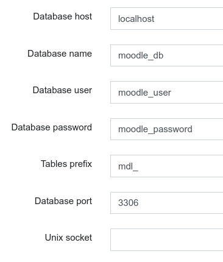
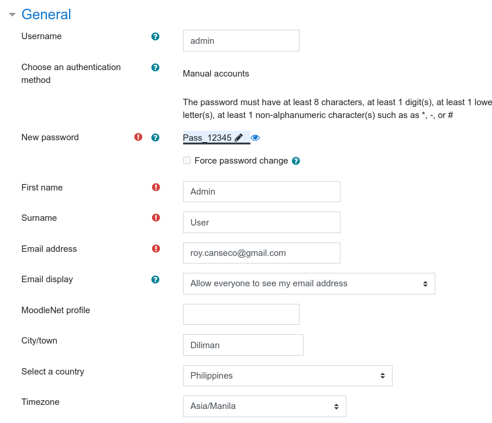

Moodle install 2020-09-08T16.03.31
Let’s say we start from the beginning so it’s more clear,
Prepare Ubuntu 18.04 LTS
Rebuild linode using Ubuntu 20.04 LTS
ubuntu20.04LTSpassword
adduser sir_roy
add password for linode
Setting Up a Basic Firewall
ufw allow OpenSSH
ufw enable
ufw status
Configure Firewall
https://www.digitalocean.com/community/tutorials/ufw-essentials-common-firewall-rules-and-commands
It might be good to setup ssh keys
First, you need to update your system
sudo apt update && sudo apt dist-upgrade && sudo apt autoremove
Install Nginx HTTP Server
sudo apt install nginx
After installing Nginx, the commands below can be used to stop, start and enable Nginx service to always startup when your computer boots.
sudo systemctl stop nginx.service
sudo systemctl start nginx.service
sudo systemctl enable nginx.service
Install Postgresql 11
[Install MariaDB Database Server]
This is if using the default MariaDB,
sudo apt install mariadb-server mariadb-client
After installing, the commands below can be used to stop, start and enable MariaDB service to always start up when the server boots.
sudo systemctl stop mariadb.service
sudo systemctl start mariadb.service
sudo systemctl enable mariadb.service
After that, run the commands below to secure MariaDB server.
sudo mysql_secure_installation
````
Enter current password for root (enter for none): Just press the Enter
Set root password? [Y/n]: Y
New password: Enter MariaDBpassword
Re-enter new password: Repeat MariaDBpassword
Re-enter new password: Repeat MariaDBpassword
Remove anonymous users? [Y/n]: Y
Disallow root login remotely? [Y/n]: Y
Remove test database and access to it? [Y/n]: Y
Reload privilege tables now? [Y/n]: Y
``````
Next, run the commands below to open MySQL default configuration file.
nano /etc/mysql/mariadb.conf.d/50-server.cnf
Now to add some configuration to your instance
default_storage_engine = innodb
innodb_file_per_table = 1
innodb_file_format = Barracuda
innodb_large_prefix = 1
sudo systemctl restart mariadb.service
Now we need to create a Database for our Moodle installation. Enter your MariaDB instance like
sudo mysql -u root -p
enter MariaDBpassword
Then create a database and configure it for usage
CREATE DATABASE moodle_db;
CREATE USER 'moodle_user'@'localhost' IDENTIFIED BY 'moodle_password';
GRANT ALL ON moodle_db.* TO 'moodle_user'@'localhost' IDENTIFIED BY 'moodle_password' WITH GRANT OPTION;
FLUSH PRIVILEGES;
EXIT;
Install PHP7.4 and Related PHP Modules
sudo apt-get install software-properties-common
sudo add-apt-repository ppa:ondrej/php
sudo apt update
sudo apt install php7.4-fpm php7.4-common php7.4-mysql php7.4-gmp php7.4-curl php7.4-intl php7.4-mbstring php7.4-soap php7.4-xmlrpc php7.4-gd php7.4-xml php7.4-cli php7.4-zip php7.4-pgsql
After installing PHP 7.4, go and configure some basic settings that may be required for Moodle to function properly.
sudo nano /etc/php/7.4/fpm/php.ini
file_uploads = On
allow_url_fopen = On
short_open_tag = On
memory_limit = 256M
cgi.fix_pathinfo = 0
upload_max_filesize = 200M
max_execution_time = 360
date.timezone = Asia/Manila
post_max_size = 200M
Download moodle 3.9
I'm choosing to download moodle 3.9 stable. The latest atm is 3.10 stable. The oldest supported is 3.7
sudo apt install git curl
cd /var/www/
sudo git clone -b MOODLE_39_STABLE git://git.moodle.org/moodle.git moodle
Then run the commands below to set the correct permissions for Moodle to function.
sudo mkdir -p /var/www/moodledata
sudo chown -R www-data:www-data /var/www/
sudo chmod -R 755 /var/www/
sudo chown www-data:www-data /var/www/moodledata
Configure Nginx
You can type the following to create the file needed
$ sudo nano /etc/nginx/sites-available/moodle
``` server { listen 80; listen [::]:80; root /var/www/moodle; index index.php index.html index.htm; server_name moodle.172.105.217.30.nip.io;
client_max_body_size 100M;
autoindex off;
location / {
try_files $uri $uri/ =404;
}
location /dataroot/ {
internal;
alias /var/www/moodledata/;
}
location ~ [^/].php(/|$) {
include snippets/fastcgi-php.conf;
fastcgi_pass unix:/run/php/php7.4-fpm.sock;
fastcgi_param SCRIPT_FILENAME $document_root$fastcgi_script_name;
include fastcgi_params;
}
} ```
Update firewall settings
sudo ufw allow ssh
sudo ufw allow 22
sudo ufw allow http
sudo ufw allow 80
sudo ufw allow https
sudo ufw allow 443
sudo ufw allow proto tcp from any to any port 80,443
[sudo ufw allow 3306]
sudo ufw allow 25
sudo ufw allow 465
sudo ufw allow 587
Enable the Moodle site
sudo ln -s /etc/nginx/sites-available/moodle /etc/nginx/sites-enabled/
Restart Nginx
sudo systemctl restart nginx.service
sudo apt install ghostscript
Set up moodle
http://moodle.172.105.217.30.nip.io/
language: english
Data directory: /var/www/moodledata
directory is writeable by 'www-data'
database: MariaDB (native/mariadb)


Moodle Learning Management System moodlelms
Asia/Manila
self-registration on
I agree to the Privacy notice and data processing agreement
Site administration-> Server -> System Paths * /usr/bin/ghostscript * save changes
Restart VPS